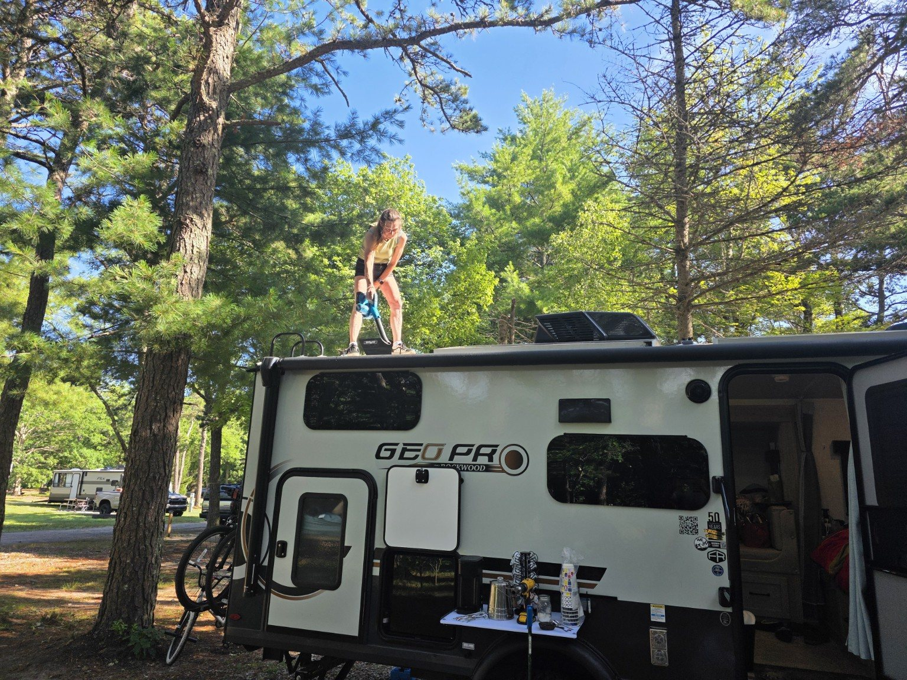
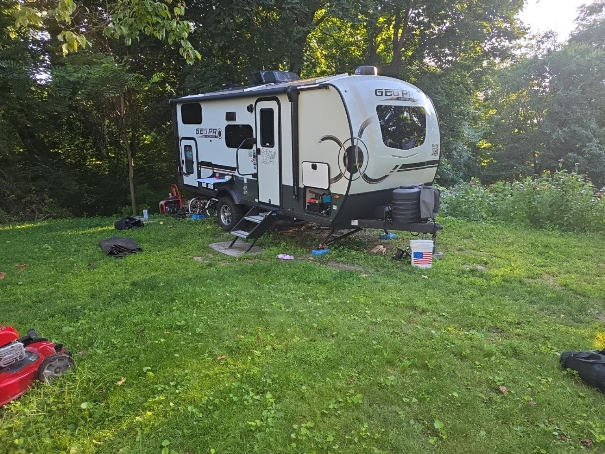

Lisa and Ken agreed that the campsite was awesome. The patio made the site feel more like an outdoor living room than a patch of ground, and the layout worked beautifully for Trail Tater, the tents, the crew and the camp kitchen.
Sandy Pond became the first campground to earn Trail Tater’s highest title: Super Tater Park. 🏆🥔
Why it worked
The people mattered as much as the place.
CampsiteExcellent patio and an overall layout that handled the camper, tents and shared camp space.
EmployeesSome of the friendliest and easiest people we have dealt with at a campground.
Office and camp storeLimited camp supplies, branded sweatshirts and T-shirts, and decals.
Entrance general storeCold beer, soda, groceries, hot breakfast sandwiches, and hot and cold lunch sandwiches.
The campsite that became home beneath the pines for the Plymouth pilgrimage.The campground’s quiet swimming beach on a clear morning.

Breaking camp after a full week—the kind of work that proves a campsite was truly lived in.

Home again after Sandy Pond gave the crew shelter for the full pilgrimage.
Campground food report
The general store earned a place in the story.
Friday night, three large pizzas from the store fed the crew. At $9.99 each, they were inexpensive, convenient and exactly what a hungry campsite needed. The store’s hot breakfast sandwiches and hot and cold lunch sandwiches also made it far more useful than the limited office camp store.
Would we return? Gladly. That is the question behind every Tater rating—and Sandy Pond answered it without hesitation.